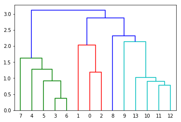
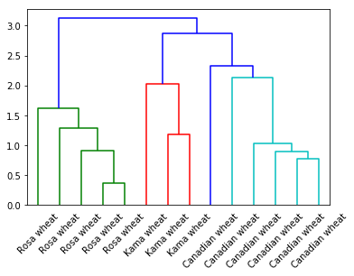
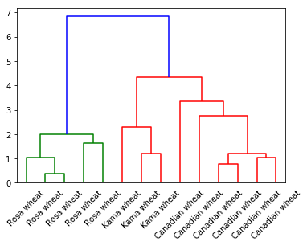
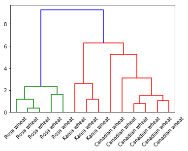

代码下载
实验目的
如果您以前从未使用过树状图，那么使用树状图是查看多维数据如何聚集在一起的好方法。 在这本笔记本中，我将简单探索通过层次分析，借助树状图将其可视化。
层次分析
层次分析是聚类分析的一种，scipy有这方面的封装包。
linkage函数从字面意思是链接，层次分析就是不断链接的过程，最终从n条数据，经过不断链接，最终聚合成一类，算法就此停止。
dendrogram是用来绘制树形图的函数。
实验数据
grain_variety是标签，其他列为多种属性的值（特征）。
from scipy.cluster.hierarchy import linkage, dendrogram
import matplotlib.pyplot as plt
import pandas as pd
seeds_df = pd.read_csv('seeds-less-rows.csv')
seeds_df.head()
| area | perimeter | compactness | length | width | asymmetry_coefficient | groove_length | grain_variety | |
|---|---|---|---|---|---|---|---|---|
| 0 | 14.88 | 14.57 | 0.8811 | 5.554 | 3.333 | 1.018 | 4.956 | Kama wheat |
| 1 | 14.69 | 14.49 | 0.8799 | 5.563 | 3.259 | 3.586 | 5.219 | Kama wheat |
| 2 | 14.03 | 14.16 | 0.8796 | 5.438 | 3.201 | 1.717 | 5.001 | Kama wheat |
| 3 | 19.31 | 16.59 | 0.8815 | 6.341 | 3.810 | 3.477 | 6.238 | Rosa wheat |
| 4 | 17.99 | 15.86 | 0.8992 | 5.890 | 3.694 | 2.068 | 5.837 | Rosa wheat |
#移除文本数据列
varieties = list(seeds_df.pop('grain_variety'))
varieties
['Kama wheat',
'Kama wheat',
'Kama wheat',
'Rosa wheat',
'Rosa wheat',
'Rosa wheat',
'Rosa wheat',
'Rosa wheat',
'Canadian wheat',
'Canadian wheat',
'Canadian wheat',
'Canadian wheat',
'Canadian wheat',
'Canadian wheat']
samples = seeds_df.values
print(samples)
print('samples的维度',samples.shape)
[[14.88 14.57 0.8811 5.554 3.333 1.018 4.956 ]
[14.69 14.49 0.8799 5.563 3.259 3.586 5.219 ]
[14.03 14.16 0.8796 5.438 3.201 1.717 5.001 ]
[19.31 16.59 0.8815 6.341 3.81 3.477 6.238 ]
[17.99 15.86 0.8992 5.89 3.694 2.068 5.837 ]
[18.85 16.17 0.9056 6.152 3.806 2.843 6.2 ]
[19.38 16.72 0.8716 6.303 3.791 3.678 5.965 ]
[17.36 15.76 0.8785 6.145 3.574 3.526 5.971 ]
[13.32 13.94 0.8613 5.541 3.073 7.035 5.44 ]
[11.43 13.13 0.8335 5.176 2.719 2.221 5.132 ]
[11.26 13.01 0.8355 5.186 2.71 5.335 5.092 ]
[12.46 13.41 0.8706 5.236 3.017 4.987 5.147 ]
[11.81 13.45 0.8198 5.413 2.716 4.898 5.352 ]
[11.23 12.88 0.8511 5.14 2.795 4.325 5.003 ]]
samples的维度 (14, 7)
使用linkage函数对samples进行层次聚类
X = linkage(y, method='single', metric='euclidean')
sacipy中y是距离矩阵，我对此只是傻傻的理解成特征矩阵。 (m*n) m行代表m条记录,n代表n个特征
返回结果X是(m-1)*4的矩阵。 具体含义请看下面的案例
mergings = linkage(samples)
#我们发现mergings比samples少一行
print('sample维度',samples.shape)
print('mergings维度',mergings.shape)
sample维度 (14, 7)
mergings维度 (13, 4)
#层次分析可视化，leaf的字体不旋转，大小为10。
#这里我们不显示每一条数据的具体名字标签（varieties），默认以数字标签显示
dendrogram(mergings,leaf_rotation=0,leaf_font_size=10)
plt.show()
#在图中显示的数字是最细粒度的叶子，相当于每个样本数据点。

mergings
array([[ 3. , 6. , 0.37233454, 2. ],
[11. , 12. , 0.77366442, 2. ],
[10. , 15. , 0.89804259, 3. ],
[ 5. , 14. , 0.90978998, 3. ],
[13. , 16. , 1.02732924, 4. ],
[ 0. , 2. , 1.18832161, 2. ],
[ 4. , 17. , 1.28425969, 4. ],
[ 7. , 20. , 1.62187345, 5. ],
[ 1. , 19. , 2.02587613, 3. ],
[ 9. , 18. , 2.13385537, 5. ],
[ 8. , 23. , 2.323123 , 6. ],
[22. , 24. , 2.87625877, 9. ],
[21. , 25. , 3.12231564, 14. ]])
层次分析图从上到下看，依次是枝和叶。
第一列和第二列代表类标签，包含叶子和枝子。
第三列代表叶叶（或叶枝，枝枝）之间的距离
第四列代表该层次类中含有的样本数（记录数）
X = linkage(y, method='single', metric='euclidean')
method是指计算类间距离的方法,比较常用的有3种:
(1)single:最近邻,把类与类间距离最近的作为类间距
(2)average:平均距离,类与类间所有pairs距离的平均
(3)complete:最远邻,把类与类间距离最远的作为类间距
我们写曾侧分析法函数，看看不同的method从图中有什么区别
def hierarchy_analysis(samples,method='single'):
mergings = linkage(samples, method=method)
dendrogram(mergings,
labels=varieties,
leaf_rotation=45,
leaf_font_size=10)
plt.show()
#single
hierarchy_analysis(samples,method='single')

#average
hierarchy_analysis(samples,method='average')

#complete
hierarchy_analysis(samples,method='complete')

由于数据量比较少，complete和average方法做出来的图完全一样。